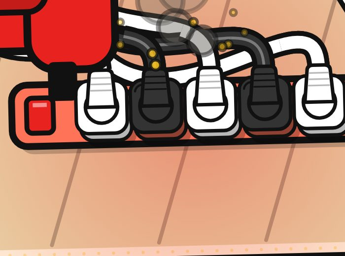
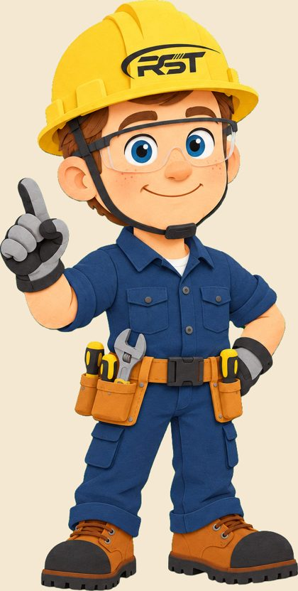
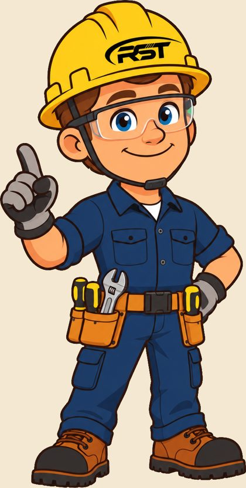
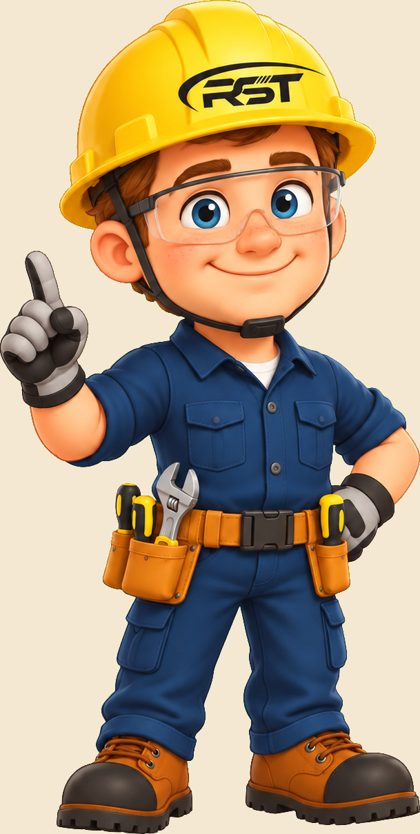

huashu-art-motion
通用的艺术动画方法
教 AI 用代码画出会动的画：35 种艺术风格配方、9 种解说动画语法、参考动画拆解工具和一键验收。
- 我们借用了
- 先拆机制再写代码；三个方向让人挑；画面必须一直在动；人物交给生图模型、代码负责合成；交付前独立审片
- 安装
- npx skills add alchaincyf/huashu-art-motion
英文配音、动画、配乐、横竖两版、字幕和发布文案，全部在 Claude Code 的一个对话里完成。人负责选题、挑方向、提意见。
所有工具都由 Opus 5.5 用命令行调用，人不需要在几个软件之间切换。
在 Claude Code 桌面版里运行：读写项目文件、执行命令、派出子 agent。
从同一张母版改图，生成 10 个姿势和张嘴、眨眼帧
逐句合成英文旁白，每句起止时间精确
用真实产品模型渲染，不让 AI 画产品
原创配乐和音效，口播时自动压低
逐帧渲染，一套代码出横竖两版
第一支片花了一整天，很多时间在返工：插头画错、配音不对味、角色像素材图。做完以后，Opus 5.5 把流程、工程模板、工具脚本和每一条被纠正过的问题整理成 crst-safety-video 这个 skill。
第二支片换了题材，也换了画风，按 skill 开工后 38 分钟就渲出第一版。之后每支片新踩的坑、新做的角色动作，都会收回 skill 里。
Skill 是一个文件夹：一份写给 Claude 的流程说明，加上参考文档、代码模板和素材。装进 Claude Code 以后，遇到相关任务它会自动读取，按里面的方法做。
一个是社区开源的通用动画方法，一个是我们按 CRST 的需求定制的完整流程，已放到公司 GitHub 私有仓库，同事可以直接安装。
教 AI 用代码画出会动的画：35 种艺术风格配方、9 种解说动画语法、参考动画拆解工具和一键验收。
从两支成片总结出来，专门做 CRST 插排的美国市场科普短片。说一句「做一支用电安全科普视频」，就按 8 步流程走到交付。Claude Code 和 Codex 都能用。
install.sh，会自动装给本机已有的工具顺序固定，每一步都有对应的工具和检查。
AI 生图最常把插头画错：脚数不对、接地孔错位、电线从奇怪的地方伸出来。做用电安全科普，这种错误不能有。
Opus 5.5 写了一个按美国 NEMA 标准的接线零件库。场景只写「哪个插头插进哪个孔」，渲染时每一帧自动检查有没有悬空、穿插、插错。

风格和角色这类主观决定，每次先出三个方向放在同一帧比较。第一支片从夜色扁平、白板手绘、警示海报里选了警示海报。
交付前再派一个没参与制作的 agent 只看成片挑问题，例如二维码压住卖点、电视线压过插孔。
每句配音单独生成，所以知道每个词在第几秒。画面事件写成 at('c1', 'metal')，意思是说到 metal 时弹出卖点。
改一句台词或换一个声音，画面、字幕、音效会自动重新对齐。角色的口型也按配音音量逐帧开合。
横屏用于 YouTube 和官网，竖屏用于 TikTok、Reels、Shorts。网页里是 720p 压缩版，原片 1080p。
5 个会引发房屋火灾的插排错误
防雷插排和普通插排有什么区别
第二支片最初用 3D 模型实时渲染角色，看完觉得动作不够自然，也没有口型。改用 Codex 生成 2D 动作帧，再用代码加上预备动作、回弹、呼吸、口型和眨眼。
以原有的 3D 设计稿为参考，Codex 出了剪纸、平面矢量、绘本三种画法，选了平面矢量。头盔上的标志由脚本擦掉 AI 画的字，再按帽檐角度印上真 logo。




已入库的 10 个姿势，每个都带张嘴和眨眼补丁。下一支片直接复用，缺的动作再补。
风格、角色、卖点由人决定。Opus 5.5 负责把每个方向做到可以比较，再把选定的方向做完。
插头、电线、产品这些不能错的东西，用零件库、真模型和逐帧校验来保证，不靠生图碰运气。
第一支片的返工变成第二支片的规则。每做一支片，下一支就更快、更稳。